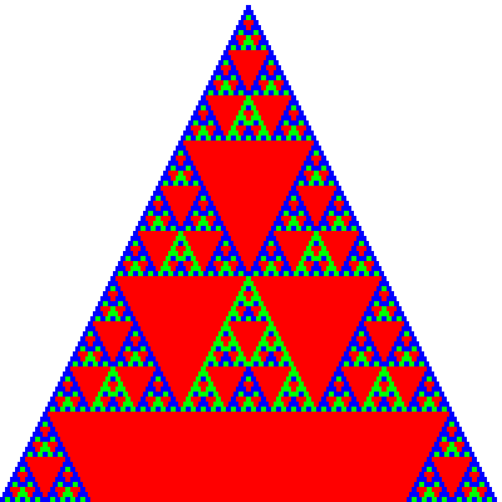
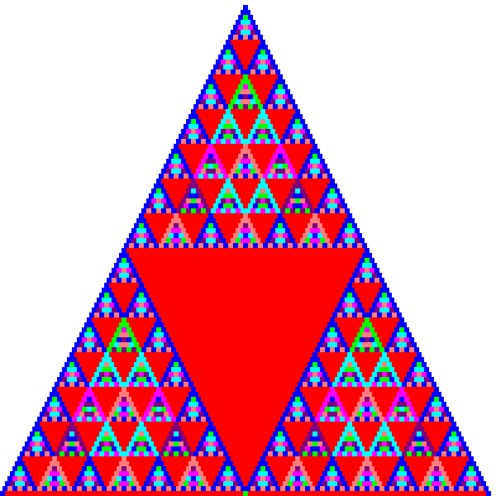
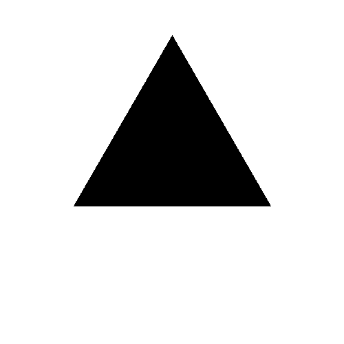

- A) Práca s grafikou, B) Collatzova postupnosť, C) Ulamova špirála, D)NSD prvá časť.
- A) Generovanie kombinácií, variácií a permutácií, B) Pascalov trojuholník, C) Približné umocňovanie
- A) Knžnica pre korytnačiu grafiku, B) Absolútne/Relatívne vykreslovanie, C) Koryrnačia grafika a fraktály, D) Kreativita korytnačky
- A) Obrazce, B) Polygón, C) Efekty, Bonus) Skrývačky
- A) Priesečníky úsečiek
- A) Chaos game, L-systémy
- 1) Vizualizácia NSD
- 2) Výpočet pí
- 3)
- 4) Vyfarbovanie obrázkov
| Link |
|---|


- Prvočísla (pozorujeme, že prvočísla sa zhlukujú na diagonálach)
- Animácia vývoja pre moduly 2-399

Go back to TOC
def combinations(lis, k): result = [] if k == 0: return [[]] else: for i in range(len(lis)): some_result = combinations(lis[i+1:], k-1) for item in some_result: result.append([lis[i]]+item) return result
def combinations_repeat(lis, k): result = [] if k == 0: return [[]] else: for i in range(len(lis)): some_result = combinations(lis[i:], k-1) for item in some_result: result.append([lis[i]]+item) return result
def variations(lis, k): result = [] if k == 0: return [[]] else: for i in range(len(lis)): tmp_list = lis[:] tmp_list.remove(lis[i]) some_result = combinations_repeat(tmp_list, k-1) for item in some_result: result.append([lis[i]]+item) return result
def variations_repeat(lis, k): result = [] if k == 0: return [[]] else: for i in range(len(lis)): some_result = combinations_repeat(lis[:], k-1) for item in some_result: result.append([lis[i]]+item) return result
def slow_rows(n): result = [] for i in range(0,n+1): row = [] for j in range(0,i+1): row.append(len(combinations(range(i),j))) result.append(row) return result
- Veselá anekdota: Pomocou tejto neefektívnej metódy som nechal na pracovnom serveri vypočítať trojuholník do 60 stupnňa. Po dvadsiatich hodinách výpočet stále "prebiehal", až na to, že dokázal skonzumovať 50GB RAM-ky. Vinu z prílišneho zaťaženia som úspešne zvalil na kolegu, o ktorom je známe, že používa Javu...
def quick_rows(n): result = [] prev_row = [] for i in range(1,n): row = [] for j in range(0,i): if j == 0 or j == i-1: row.append(1) else: row.append(prev_row[j]+prev_row[j-1]) prev_row = row[:] result.append(row) return result

|
 | |
|  |
Go back to TOC
- Pentagram absolútne
#Rozdelím kružnicu na 5 bodov a pospájam def pentagram_absolutne(size, ratio): im = Image.new('RGB', (size, size), (255,255,255)) draw = ImageDraw.Draw(im) x1, y1 = 250, 250 points = [(int(math.cos(2*math.pi/5*x)*ratio)+x1,int(math.sin(2*math.pi/5*x)*ratio)+y1) for x in xrange(0,5)] points2 = points[:] for point in points: for point2 in points2: draw.line((point[0], point[1], point2[0],point2[1]), fill = 0) points2.pop(0) im.save('pentagram_absolutne.png','png') 
#Vypočítam dlhé a krátke rameno a kreslím 5x def pentagram_relativne(size, position, side): inside_angle = 180-(360/5) pentagram_angle = (180 - inside_angle)/2 #rovnoramenny trojuholnik. Sucet uhlov trojuholnika je 180 long_side = int(2*(side*math.cos(math.radians(pentagram_angle)))) g = Korytnacka(size, position) g.right(180+72) for i in range(0,5): g.right(180-pentagram_angle) g.forward(side) g.right(180-pentagram_angle) g.forward(long_side)

#Pre ľubovolnú koštantu z intervalu (side, sqrt(2*(side/2)^2)) sa pomocou acos() dopocita potrebný uhol. Veľkost strany menšieho štvorca je side*constant
def spiral(size, position, side, constant):
g = Korytnacka(size, position)
draw_square(g, side)
angle = math.degrees(math.acos((side - constant*side)/(constant*side)))
for i in range(1, 35):
g.forward(side-side*constant)
side = side * constant
g.right(90-angle)
draw_square(g, side)
g.save('spirala')
#Pomocou pytagorovej vety sa spočíta dĺžka tetivy
def grid(size, ratio, fineness):
im = Image.new('RGB', (size, size), (255,255,255))
draw = ImageDraw.Draw(im)
x1, y1 = 250, 50
x2, y2 = x1-ratio-fineness, y1+ratio+fineness
for i in range(0, 2*ratio/fineness+1):
v = ratio - i*fineness
length = math.sqrt((ratio**2)-v**2)
y1 = y1+fineness
draw.line((x1-length, y1, x1+length, y1), fill = 0)
x2 = x2+fineness
draw.line((x2, y2-length, x2, y2+length), fill = 0)
im.save('grid.png','png')

#určí sa výška trojuholníka a pomocou tangensu sa vypočíta dĺžka strany
def triangles(size, side, fineness):
im = Image.new('RGB', (size, size), (255,255,255))
draw = ImageDraw.Draw(im)
x1, y1, x2, x3, y2 = 250, 250, 250, 250, 250
hside = 0
while 2*hside < side:
y1 -= 2*fineness
y2 += fineness
v = y2 - y1
hside = v/math.atan(60)
x2 = x1 - hside
x3 = x1 + hside
draw.line((x1, y1, x2, y2), fill = 0)
draw.line((x1, y1, x3, y2), fill = 0)
draw.line((x3, y2, x2, y2), fill = 0)
im.save('triangles.png','png')
#podobne ako pri pentagrame, vypočíta sa vnútorný uhol, aby sa mohol vykresliť n-uholník. Aby sa dosiahlo symetrie, ďalší n-uholník sa vykreslí posunutý o vypočítaný uhol
def penrose(size, fineness):
side = (size/10) - fineness
position = (250, 250)
inside_angle = 360/fineness
g = Korytnacka(size, position)
g.right(180+72)
for i in range(0, fineness):
for j in range(0,fineness):
g.right(inside_angle)
g.forward(side)
g.right(inside_angle)
g.save('penrose')
- Pythagorov stromček
- Kochova vločka
- Sierpinského trojuholník
- Päťuholníková vločka

- Postupoval som ako bolo povedané na cviku: Vybral som si nejaké ťahy, ktoré som nechal opakovať 1000 krát a upravoval som parametre tak aby sa mi výsledok páčil
- Sínusová hviezdica
def star(): angle = 10 angle2 = 170 kvocient = 50 kvocient2 = 2 forward = math.sin(math.radians(angle))*kvocient for i in range(0,1000): g.left(angle) g.forward(forward) g.right(angle2+i*10) g.back(forward*kvocient2) g.right(angle2+i*10) g.forward(forward)
<
- Sínusová hviezdica
a = randint(0,10) forward = math.log10(a) angle = randint(0,90) for i in range(0,1000): g.left(angle) g.forward(math.log10(forward**i))
| < |

|
a = randint(0,100) forward = 100 angle = randint(0,180) print a, angle for i in range(0,100000): g.left(angle*math.pi*i) g.forward(math.atan(forward+i))
 < <
|

|
- A) Obrazce



- B) Polygón. Pre každý riadok sa vypočítajú priesečníky s úsečkami. Ak (x,y) je priesečník, zmení sa farba vykreslovania
- C) Efekty


- BONUS) Skrývačky:
-


Go back to TOC

Go back to TOC
- 3 body, 1/2
- 6 bodov, 1/2
- 6 bodov, 1/3
- 5 bodov, 1/2
- 5 bodov, 1/3

- Kochova vločka, Sierpinského trojuholník, Pythagorov stromček
 <
<

- Stromy, riasy, prasličky
< 

- Rôzne krivky
 <
<

Go back to TOC